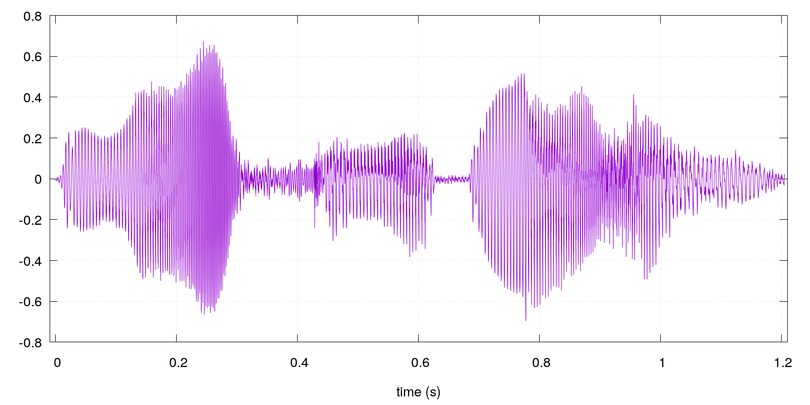

main menu
Example of speech analysis
We analyze
recording
, which is a
WAV file
, where women voice says: "You've got mail". This file is downloaded from
this website
.

classic spectrogram:
reassigned spectrogram:
time-frequency accelerogram:
main menu